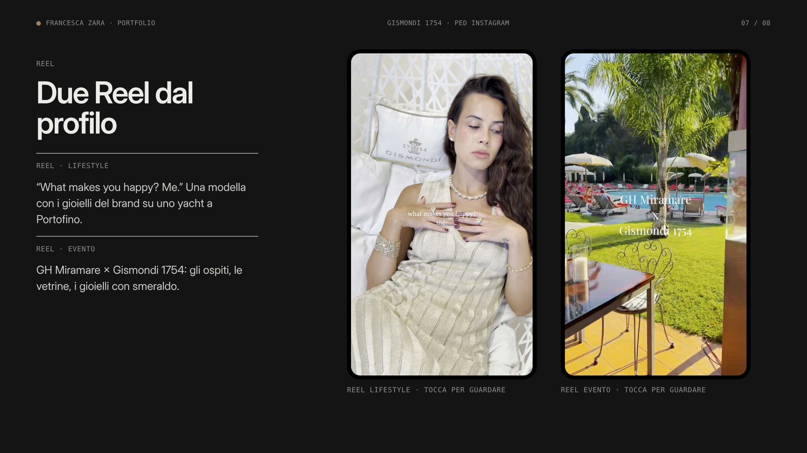
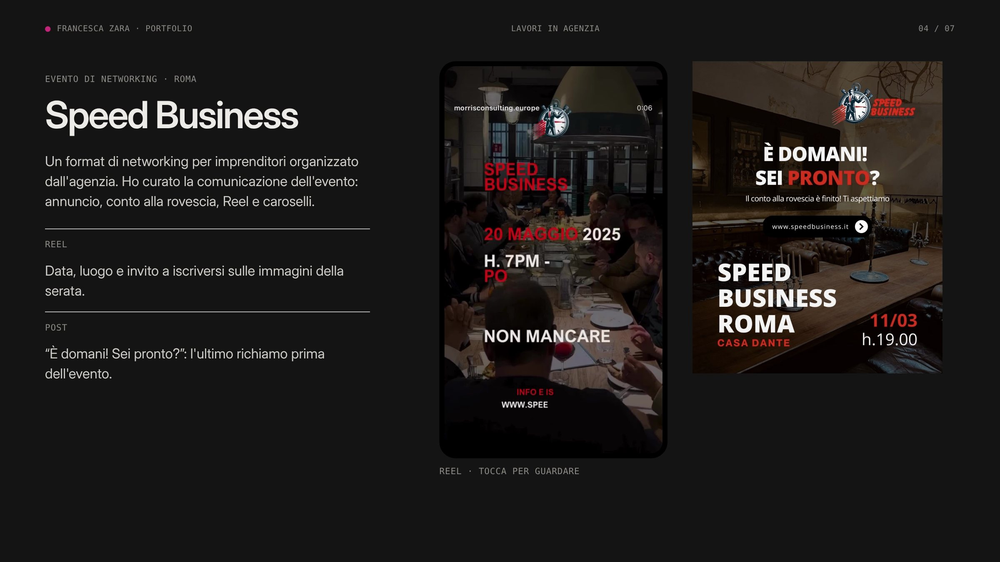

Francesca
Zara
Social media manager con oltre due anni tra agenzia e alta gioielleria. Seguo l'intero ciclo dei contenuti: strategia, piano editoriale, copy in italiano e inglese, grafiche, Reel e analisi dei risultati.
- Oggi
- Gismondi 1754, alta gioielleria
- Prima
- Morris Consulting Europe, digital marketing
- Formazione
- Laurea magistrale in Marketing & Digital Communication, LUMSA, 110 e lode
- Base
- Roma
I progetti
Tocca una copertina per andare al progetto, poi scorri le tavole.
Gismondi 1754
Piano editoriale Instagram di dicembre per l'alta gioielleria
Junior Social Media & AI Specialist, da aprile 2026
Piano editoriale, copy in inglese, Stories, Reel, still life
Canva, Photoshop, Meta Business Suite

Lavori in agenzia
Digital marketing per PMI, eventi e finanza agevolata
Junior Digital Marketing Specialist, 2024–2025
Social per i clienti, campagne paid, siti ed e-commerce, articoli SEO, DEM, finanza agevolata
Meta e Google Ads, WordPress, Brevo, Google Analytics, Canva

Upside.wrld
Social media strategy per un brand streetwear
Social media strategy, progetto LUMSA 2023
Analisi di mercato, strategia, post delle campagne, Meta Ads, KPI e budget
Canva, Meta Business Suite
Rimesse senza barriere
Piano marketing per l'inclusione finanziaria, case study su Intesa Sanpaolo
Analisi e pianificazione marketing, progetto LUMSA 2022
Analisi del contesto, target, marketing mix, piano di comunicazione
Canva
Grafiche per eventi
Menu e locandine per ristorazione e radio
Graphic design per clienti
Menu e locandine per stampa e Instagram
Canva
Cosa so fare
Social media management
Instagram, Facebook, LinkedIn. Piano editoriale, Reel, Stories, community.
Copywriting
Testi in italiano e inglese, tono di voce per brand del lusso.
Advertising
Meta Ads, Google Ads, LinkedIn Ads: pianificazione e ottimizzazione.
Contenuti e grafica
Canva, Adobe Creative Cloud, strumenti di AI generativa.
Analisi
Meta Business Suite, Google Analytics, Google Tag Manager, report mensili.
Web, SEO ed email
WordPress, B12, articoli SEO, DEM con Brevo, lead generation su LinkedIn.
Cerchi una social media manager?
Scrivimi per un colloquio o per ricevere il CV completo.